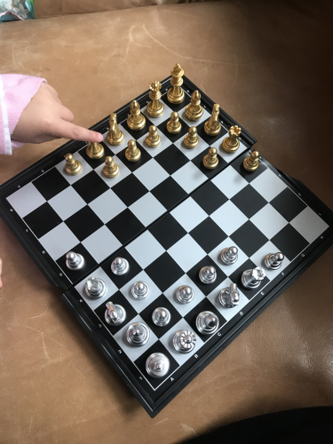
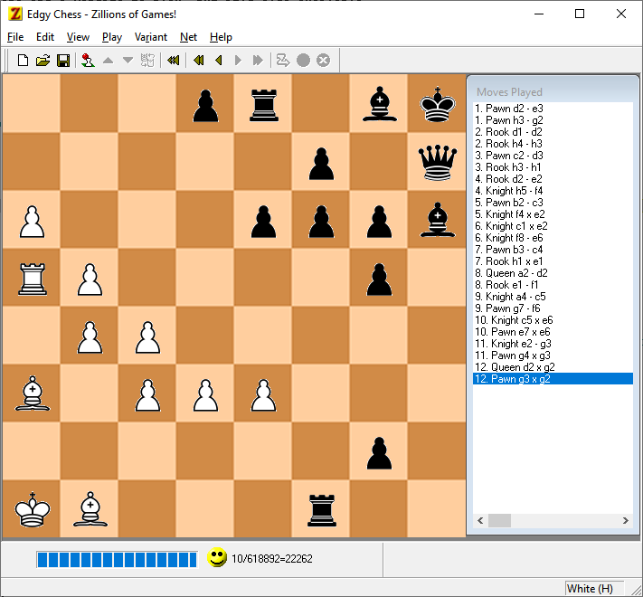
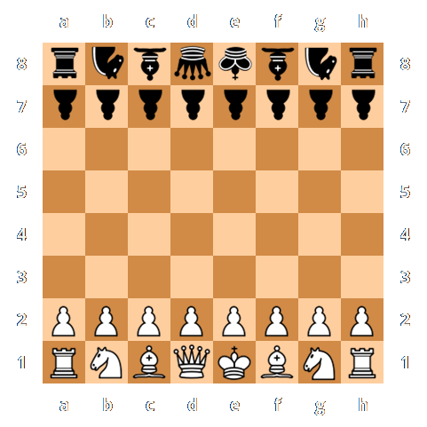
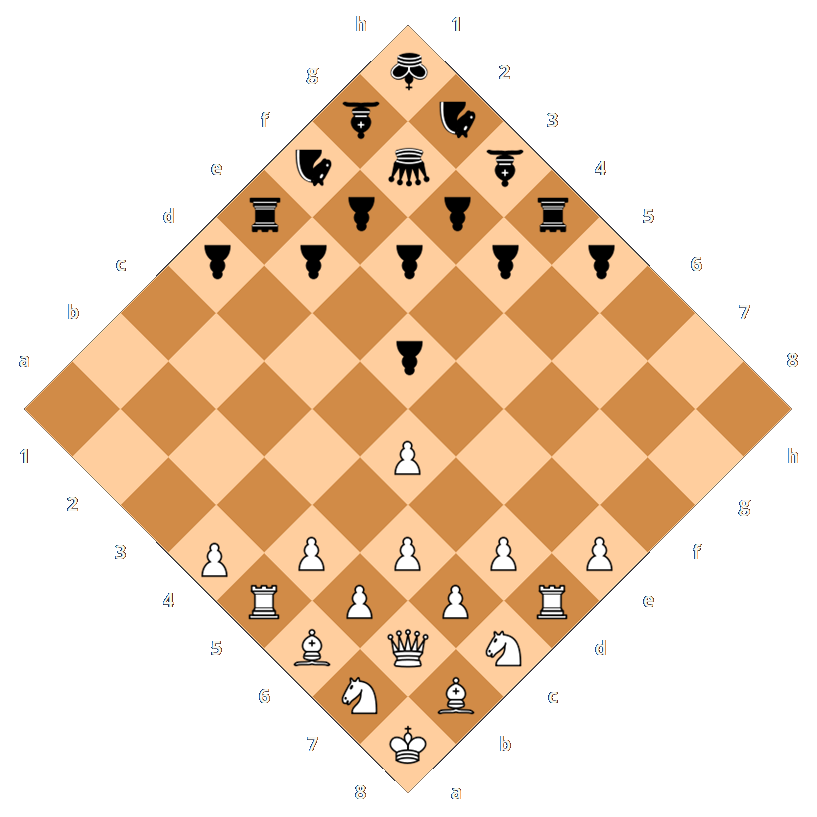

Origin Story
July 19, 2017 - When Edge was two years old, she and her family were visiting her uncle's place at Lake Joseph in Ontario, Canada. Edge was observing her cousins playing a classic game of chess. Afterwards, she proceeded to play with the chess pieces setting them up by color in opposite corners of the chess board. Kind of random, but there was something special about it.
Her father Marc saw this setup and immediately thought that this is genius. It clearly was a new way of enjoying the game of chess. The devil was as usual in the details: Where exactly to place the pieces initially, what rules where same or different to classic chess, and of course would it be fun to play?

They began by turning the empty chess board by 45 degrees. Square a1 was right in front of them and h8 furthest away. As Edge had done as well, they started by placing the kings in opposing corners at a1 and h8. Then queen to rook were setup along the right edge and bishop to rook along the left edge which partly explains the name of our chess variant. Then we put the pawns in front to wall in the other pieces as is common in chess.
After a little while we notice the mistake and mirrored the setup to align with the proper order of pieces in classic chess. And, viola, Edgy Chess was invented by Edge and Marc Bernard!
The order of pieces is the same as classic chess, just shifted to the left until the king is in the corner. This makes it very easy to remember. Only a little fine-tuning of the Rules of Chess was necessary. Pawns would now move diagonally and capture to either side of their path. We got rid of moving two step and en passant, which is quite complicated anyway. But figured that castling would still be possible. Pawns would promote on the fields where the opponents initial non-pawn pieces are located. Off the family went and played the first ever game of Edgy Chess!
Name of the Game
The initial name of the game was "Edge Chess". However, research revealed that someone else had claimed this name for another - completely unrelated - chess variant already (see "Research" below). "Corner Chess" was taken already and didn't have the clever association to the inventor's name either.
Therefore the name Edgy Chess was born. It keeps still pays tribute to the inventor (good frieds might call Edge by "Edgy"). Also, after playing Edgy Chess for a few times, you will notice that the name makes even more sense when you look at the actual definition of the word edgy: "having a bold, provocative, or unconventional quality". It fits perfectly to how the game plays.
Let's Play
Of course it's best to play Edgy Chess with a real chess board and pieces. However, the question quickly became if and how one could play Edgy Chess online - against a computer or another human player. When searching for apps for chess variants, we came across "Jocly" which is a fantastic gaming engine. Not only does it let you play classic chess but also many different variants (as well as other games). It's awesome since it can render the game in a very realistic 3D view. And if you own a pair of 3D glasses, you can turn on an Anaglyph 3D View, which is just extra cool.
As it turned out, Jocly was not only an app for your mobile phone and a website to play, but it's also available publicly as JavaScript libraries to run on your own server (see "Credits" below). It also provided instructions on how to design your own chess variant and integrate it with Jocly. After some trial and error, Marc was able to code the first version of Edgy Chess to run with Jocly.
Some time in 2018, the Jocly.com server was sadly taken down and all game variants relying on it stopped working. It wasn't until April 2020 that Marc found the time to fork the Jocly repository and build the current version of Edgy Chess and host it on www.EdgyChess.com.
If you own the classic Zillions of Games, we compiled a Zillion Rules File for Edgy Chess, which you can download here.

Analysis and Critique
Here's our own quick take on Edgy Chess. Please let us know your own thoughts at .
General
- Identical board and pieces as classic chess
Therefore Edgy Chess is playable for anyone with a chess set. - Easy to remember initial position and setup
Just turn board and put king in corner. The rest falls into place. - Very similar rules to classic chess
Just learn how pawns move which is even easier than classic chess since there's no en passant. - Opponents pieces are on average a bit closer than in classic chess
This is due to the six fields around the corners to either side that are no "between" the opponents.
Pieces
Except for pawns, all pieces move the same way as in classic chess.
- King: Positioned in the corner, the king is very well protected initially and harder to reach than in classic chess.
- Queen: Harder to develop than in classic chess because a longer diagonal move from the initial position won't be possible early in the game.
- Bishops: Same as in classic chess, the two bishops are on different colored fields. They seem to be a bit harder to develop, though.
- Knights: One of the knights can reach three fields from its initial position making them a bit more mobile.
- Rooks: Rooks are not initially cornered as in classic chess. They can be quickly developed by moving the most right or left pawns.
- Pawns: Pawn position and movement is significantly different from classic chess. Nevertheless, after a quick explanation, the position and behaviour very much make sense. A key difference is that several of the pawns protect eachother in their initial position. They can also form a tight wall for defending when aligned in a zig-zag line.
Special Movements
- En passant: One of the most difficult rules in classic chess is simply eliminated. Due to the closeness of opponents, the two-step advance of pawns from their initial position isn't allowed anyway. Therefore, en passant becomes irrelevant.
- Castling: Works the same as in classic chess except for the different initial positions of king and rooks. The distances between king and rooks is the same, too, allowing for short and long castling options.
- Pawn promotion: Pawns are significantly closer to fields where they will be promoted (theoretical minimum to reach promotion is three moves). This is another reason that make this variant more edgy. Note: The pawns on a6 and h3 will have to move towards to middle via a capture to reach a promotion field.
Game Play and Duration
So far there's little practical experience with Edgy Chess. Most of it actually stems from playing online against a computer on www.EdgyChess.com.
- Due to the closeness of opponents, there seems to less tactical positioning and more of a quick preparation for battle appropriate.
- Although board, pieces, and rules are very similar to classic chess, Edgy Chess plays very differently.
- Expansive knowledge of classic opening strategies becomes useless. New strategies for opening in Edgy Chess will have to be developed going forward.
- Similarly, new strategies for developing queen, bishops, knights, and rooks will have to be developed.
- Although castling is possible, it seems much less advantageous than in classic chess since the king already is in a corner.
- Overall, games move along much quicker.
Comparison
Here's a summary of the comparison between classic chess and Edgy Chess:

| Criteria | Classic Chess | Edgy Chess |
| Board | Same | Same, but turned 45 degrees |
| Pieces | Same | Same |
| Setup | Along opposite sides | In opposite corners |
| Movement | Same | Same except for pawns |
| En Passant | Yes | No |
| Castling | Yes | Yes |
| Pawn Promotion | 8 Fields | 8 Fields |
| Opening | 14 Moves | 13 Moves |
| End of Game | Same | Same |
There are many, many chess variants but could it be that no one had thought about a setup like Edge and Marc had invented? Initial online research turned up some existing variants like "Edge Chess", "Corner Chess", and "Corner-square Chess" variants that have no resemblance to Edgy Chess.
The best source for offline research of chess variants is David Pritchard's The Encyclopedia of Chess Variants. This incredible book did reveal "Legan Chess" as one variant where pieces are initially positioned at the corner (we could't find any other).
However, there are significant differences between Edgy Chess and Legan Chess:

| Criteria | Edgy Chess | Legan Chess |
| Board | Same | Same |
| Pieces | Same | Same |
| Setup | Asymetric | Symetric (except for bishop and knight) |
| Movement | Same | Same |
| En Passant | No | No |
| Castling | Yes | No |
| Pawn Promotion | 8 Fields | 7 Fields |
| Opening | 13 Moves | 8 Moves |
| End of Game | Same | Same |
In short, there's nothing like Edgy Chess!
Credits & Licenses
- Invention: Edge (@edgebernard)
and Marc Bernard (@marcfbe) in Lake Joseph, Ontario, Canada on July 19, 2017
- Design and Implementation: Marc Bernard (@marcfbe)
- User Interface and Engine: Jocly (AGPL)
- 3D Rendering Engine: three.js (MIT)
- Colors: Dracula Theme (MIT)